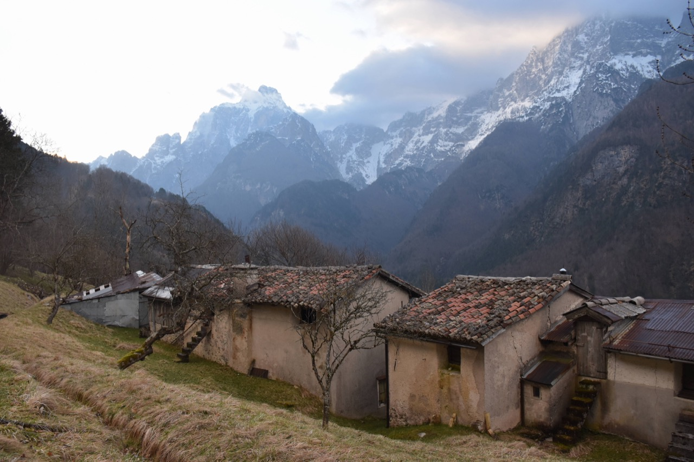
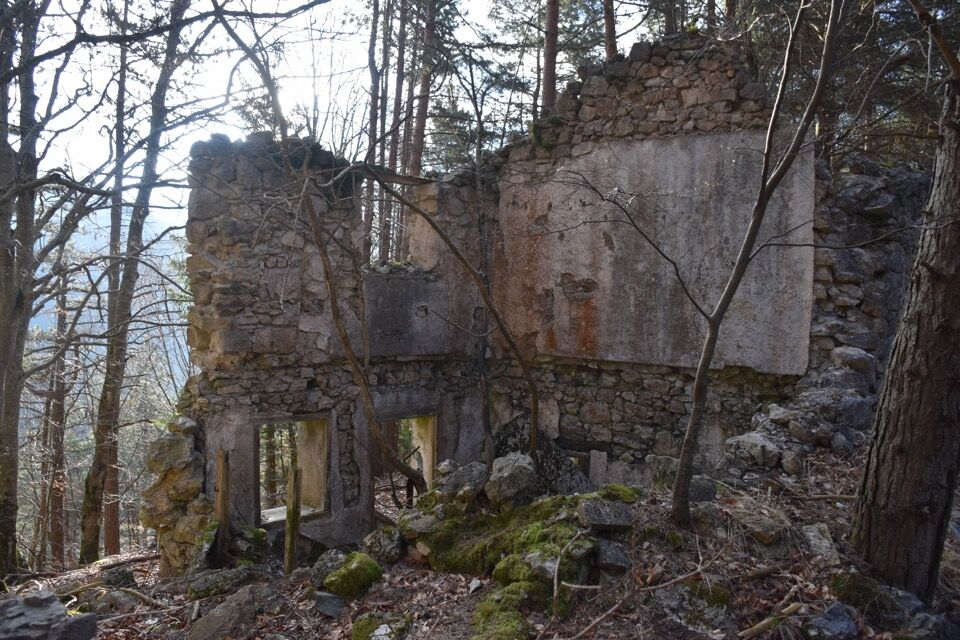
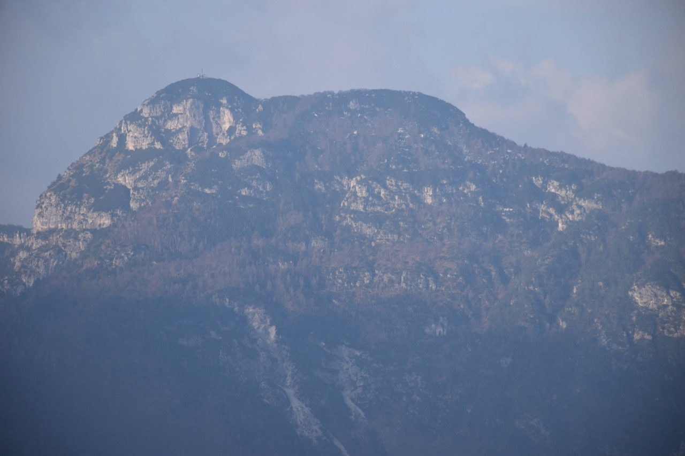
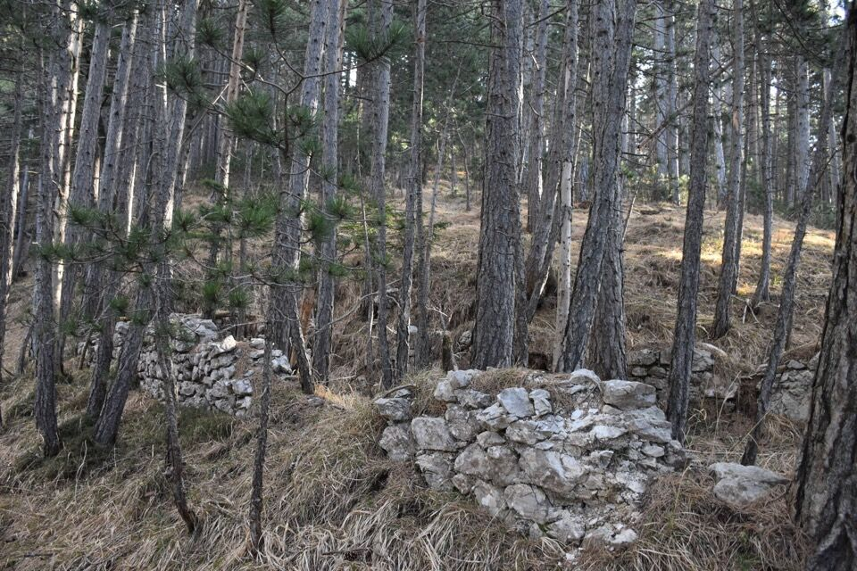
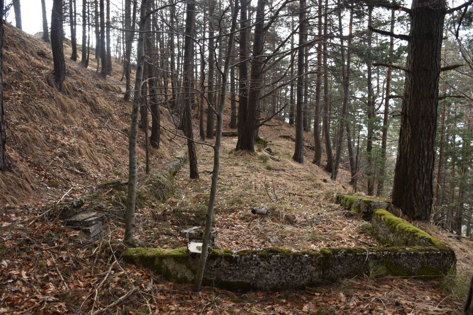
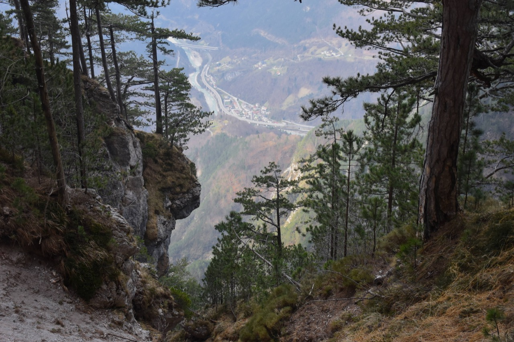
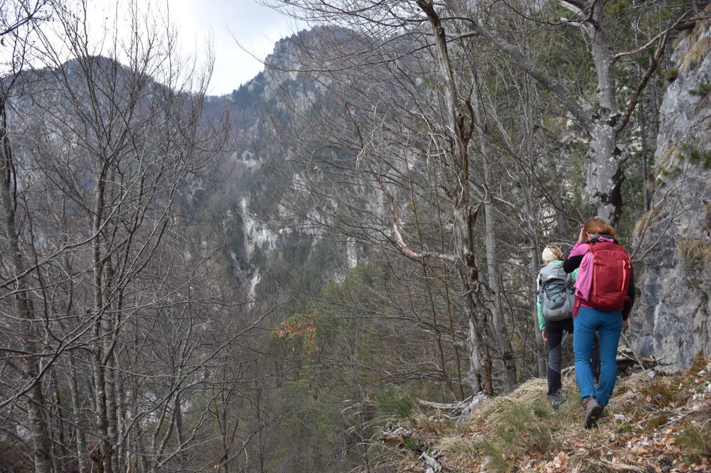
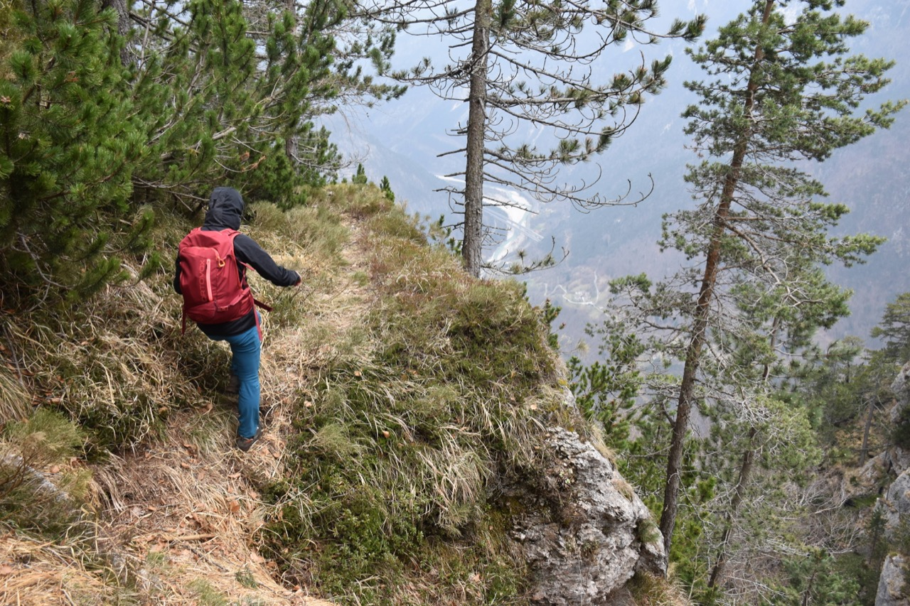
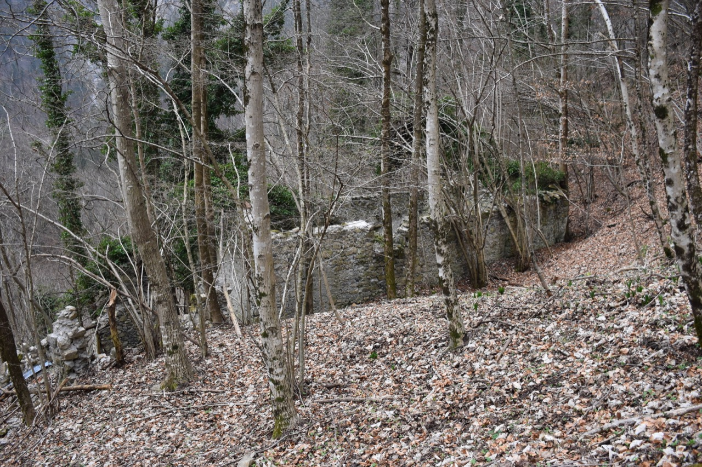
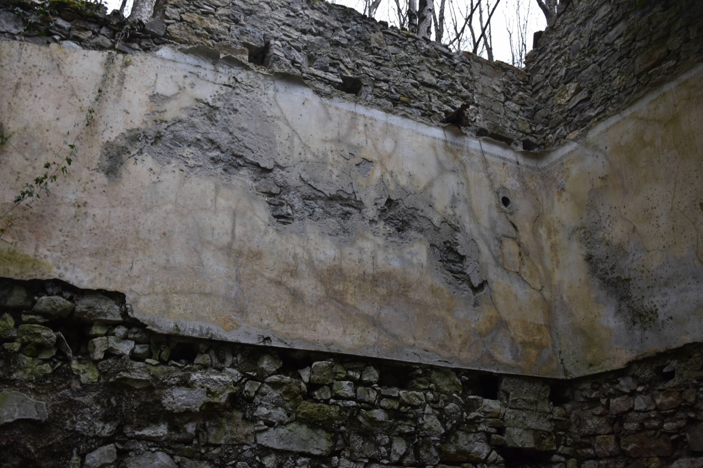

Troi dal Cuelát
NUOVO
Da Chiout di Gus
Pochi sanno che forcella Mincigòs non forma soltanto un trivio di sentieri bensì un quadrivio (*): un ardito sentiero ormai percorso solo dai camosci vi sale da Sud-Est, e attraversa il versante Sud dello Jôf di Dogna, alto sopra il rio di Terra Rossa.
Questo percorso l'avevo intuito semplicemente osservando la carta Tabacco e facendo "uno più uno": ne ho avuto conferma consultando le vecchie mappe IGM, dove il percorso è sì tracciato ma in maniera errata. In seguito ne ho sentito parlare con reverenza, cosa che ha stimolato la mia curiosità e il desiderio di andare a percorrerlo.
In una giornata d'inizio primavera partiamo dal fondo della val Dogna: ottimo punto d'osservazione sui selvaggi costoni che salgono verso le cime satelliti dello Jôf di Goliz (così chiamano in val Dogna il Cimòn della val Raccolana).
Le tre cime in foto sono, da sx a dx, lo Jôf di Misdì, lo Jovèt di Cjadramaç (cima Robinia) e il Cuel da la Bareta.
Sguardo sui lontani Mucul e Ciuc di Vallisetta; le quote in centro chiudono in dx orografica il vallone Cjalderatis.

Passiamo per Chiout di Gus, in posizione magnifica.
E per Chiout Tassot, luogo fiabesco e fermo nel tempo.
Iniziamo a salire per le Pale di Chiout di Gus, mi aspettavo un sentierino e invece troviamo una monumentale mulattiera di guerra, ormai inerbita ma a tratti davvero larga, in gran parte costruita su muretti a secco. Troviamo anche una cannoniera con varie gallerie. Come spesso succede in Friuli, è tutto lasciato in malora.
La mulattiera è piacevole da percorrere.
Il Plananize: peccato per la foschia, ma da qualche parte lì in mezzo passa il sentiero (?) di collegamento fra la forcje di Patoc e Garlitais (agâr da lis Tais), a cui penso da tempo.
La zona è piena di reperti e costruzioni di guerra - sarebbe interessante saperne qualcosa di più.
 Ma ora bando alle ciance, inizia l'avventura: in fondo, evidente, forcella Mincigòs.
Ormai non resta altro che la traccia degli animali e qualche ramo piegato.
Se non si sa dove passare (io mi ci ero convinto consultando la mappa al 5000), la parte finale può creare ansia, dato che bisogna capire come superare i selvaggi costoni che difendono il bosco sottostante la forcella; in generale, anche binocolando da lontano, tutto il percorso non è dei più evidenti.
Alcuni franamenti con fondo liscio creano qualche difficoltà, motivo per cui reputo il percorso non facile; in un passaggio si è pure tirato fuori la corda.
Ormai siamo fuori dalle incertezze...
...ma che fatica arrivare a forcella Mincigòs!
Saliamo verso lo Jôf di Dogna, ma dopo un po', complice la foschia, le nuvole in cima e la neve fra i mughi, ci diciamo: ma chi ce lo fa fare?
Avevo sentito che il CAI 602 fosse mal messo, e posso confermarlo: salendo da forcella Mincigòs, ad una certa si entra nei mughi (già troppi per essere un sentiero CAI), e dopo un po' la traccia sembra continuare verso destra, tutta tagliata fra i mughi, peccato che si interrompa in un ripido canale erboso. Questo canale lo si può risalire e ci si ricongiunge al CAI, ma non è questa la retta via: bisogna tornare indietro pochi metri e salire per la traccia in mezzo ai mughi, dove si ritrovano i segnavia CAI. Ho fatto decine di tagli qui per facilitare, ma sono aghi in un pagliaio.
Scendiamo per il sentiero (sempre 602) che dal Clap Forât porta giù a Dogna: è meritevole percorrerlo in discesa, giacché offre degli scorci davvero belli, ad ogni tornante si ha l'impressione che se non ci si fermasse si finirebbe giù a Dogna!

Per non farci mancare nulla da Chiout Pupin chiaramente finiamo in mezzo ai grebani, ma almeno così visitiamo i curiosi ruderi di Poiate, sulla sx orografica del rio di Terra Rossa.
 (*) In realtà i cacciatori ne conoscono anche un quinto...